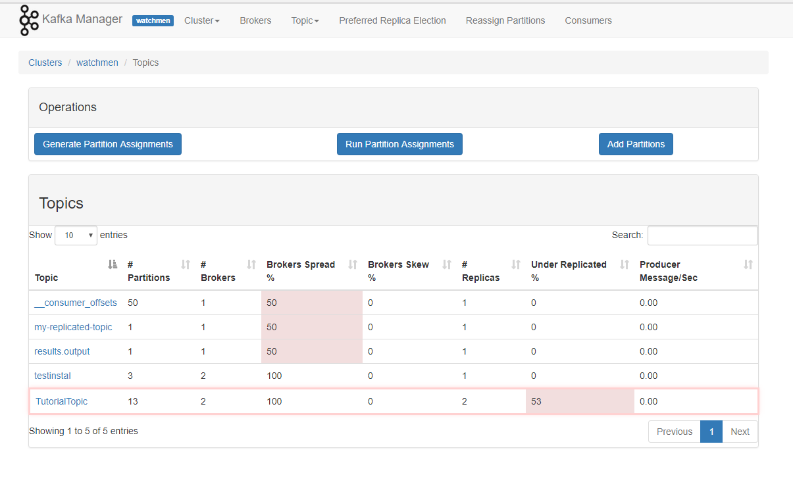

CONTENTS:
1. INSTALL¶
2. RUN EXAMPLE¶
3. INSTALL DRASH BOARD¶
Hướng dẫn cài đặt kafka:¶
Single-Node cluster¶
- Cài đặt java:
sudo apt-get install default-jre
sudo apt-get install default-jdk
- Tạo user kafka
sudo useradd kafka -m
sudo passwd kafka
sudo adduser kafka sudo
su -l kafka
- dowload, giải nén kafka:
curl "http://www-eu.apache.org/dist/kafka/1.1.0/kafka_2.12-1.1.0.tgz" -o ~/kafka.tgz
mkdir ~/kafka && cd ~/kafka
tar -xvzf ~/kafka.tgz --strip 1
- tạo các service file : zookeeper service và kafka service:
- tạo file /etc/systemd/system/zookeeper.service với nội dung
[Unit]
Requires=network.target remote-fs.target
After=network.target remote-fs.target
[Service]
Type=simple
User=kafka
ExecStart=/home/kafka/kafka/bin/zookeeper-server-start.sh /home/kafka/kafka/config/zookeeper.properties
ExecStop=/home/kafka/kafka/bin/zookeeper-server-stop.sh
Restart=on-abnormal
[Install]
WantedBy=multi-user.target
- tạo file /etc/systemd/system/kafka.service
[Unit]
Requires=zookeeper.service
After=zookeeper.service
[Service]
Type=simple
User=kafka
ExecStart=/bin/sh -c '/home/kafka/kafka/bin/kafka-server-start.sh /home/kafka/kafka/config/server.properties > /home/kafka/kafka/kafka.log 2>&1'
ExecStop=/home/kafka/kafka/bin/kafka-server-stop.sh
Restart=on-abnormal
[Install]
WantedBy=multi-user.target
- Start kafka, zookeeper.
sudo systemctl start kafka
ta đã cài được cụm kafka với 1 broker, dùng cổng 9092. zookeeper service mở cổng 2181
Multi-Node cluster¶
Thực hiện nguyên các bước như single node, chỉ khác trước khi khởi động kafka. ta cần sửa các cấu hình:
- File ~/kafka/config/server.properties:
- sửa dòng
broker.id=0
Sao cho mỗi broker trong cluster sử dụng 1 broker id khác nhau
- sửa dòng
zookeeper.connect=localhost:2181
Sao cho tất cả các node trong cụm trỏ thống nhất về 1 zookeeper . vd như sửa tại tất cả các node thành
zookeeper.connect=192.168.2.191:2181
Chạy example :¶
- Tạo một topic
~/kafka/bin/kafka-topics.sh --create --zookeeper localhost:2181 --replication-factor 1 --partitions 1 --topic TutorialTopic
- Ghi dữ liệu vào topic nhờ kafka producer console
echo "Hello, World" | ~/kafka/bin/kafka-console-producer.sh --broker-list localhost:9092 --topic TutorialTopic > /dev/null
- List topic:
~/kafka/bin/kafka-topics.sh --list --zookeeper localhost:2181
- Đọc dữ liệu từ topic trên nhờ kafka consummer console
~/kafka/bin/kafka-console-consumer.sh --bootstrap-server localhost:9092 --topic TutorialTopic --from-beginning
Cài đặt DrashBoarsh¶
Docker:
docker run -d --net=host --restart unless-stopped --name kafka_manager -e ZK_HOSTS="localhost:2181" -e APPLICATION_SECRET=letmein sheepkiller/kafka-manager
Một web-controll sẽ được mở ra tại cổng 9000
